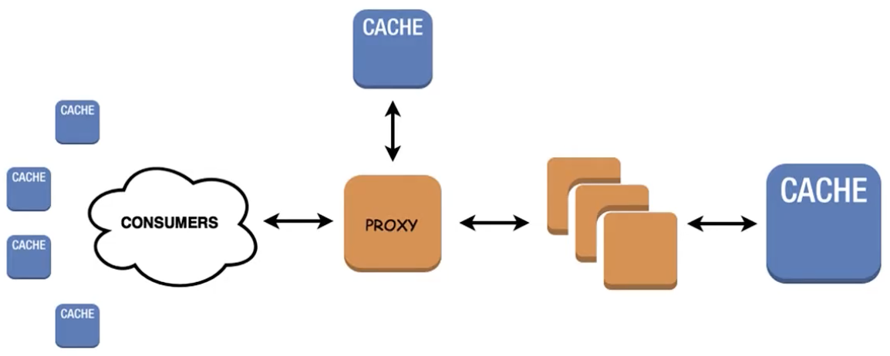

Caching
🌱 A gentle intro
Кэширование -- Один из самых простых и в то же время эффективных способов оптимизации веб-приложения. Данное решение удовлетворяет проектам любой сложности и является краеугольным камнем сервисов с большой нагрузкой. Идея оптимизации через кэш отнюдь не нова. Как вы знаете из CS101:
CS101
любой алгоритм имеет пространственную и вычислительную сложности.
Не нужно далеко ходить за примером эффективного применения кэш-технологий; вы буквально смотрите на него прямо сейчас -- адресная строка браузера (ну, разве что чуть выше).
Каждый раз когда вы указываете желаемый домен, например, https://github.com, вы не переходите волшебным образом на гитхаб. В данном случае github -- это просто строка. Чтобы попасть на какой-либо сервер необходимо знать его адрес. Для этого существуют Domain Name Systems. Строка с запросом отправляется через "удивительные миры интернета" к указанному в ваших настройках сети DNS-провайдеру. Зачастую это стандартный DNS вашего интернет-провайдера, но можно указать и любой другой, скажем, Cloudflare 1.1.1.1.
забавный факт 🇷🇺
все запреты РКН модерируются только на стороне вашего провайдера, так что сменив DNS вы автоматически обходите все блокировки.
Как только запрос попадает на ближайший DNS-сервер, запускается алгоритм поиска указанного домена в хэш-таблицах. Зачастую такой "лукап" занимает 10-50ms. Причем, чем популярнее сайт (чаще приходят запросы), тем быстрее происходит поиск. Это связано с несколькими уровнями кэширования. Подробнее об этой технологии вы можете прочитать здесь [с картинами!]. А теперь перейдем непосредственно к решениям!
💾 Django caching
В Django существует встроенный интерфейс для кэширования которому лишь необходимо указать endpoint и backend. Так вы можете кэшировать результат работы представления, можете кэшировать только те куски, которые трудно вычислять или вовсе весь сайт.
Все рассмотренные ниже примеры являются базой данных, кэш-хранилищем и брокерами, что делает спектр их применения крайне обширным. По принципу они очень схожи со словорями в Python; они принимают ключ, ассоциируемым со значением. Отличительная черта этих решений в том, что они хранят свои таблицы в оперативной памяти, что позволяет получать к ним доступ существенно быстрее нежели чем через традиционный запрос к БД, к которому можно еще добавить нагрузку от использования ORM-django (если вы его используете).
🔧 Setup
Для подключения кэширования в Django достаточно указать CACHES в настройках проекта. Однако, кэширование возможно не только с помощью специализированных утилит. Вы также можете хранить кэш в БД или файловой системе. В этом плане Django агностичен к вашему стеку. Таким образом, можно зарегестрировать несколько бэкендов хранилищей и указать множество путей до них, что позвоялет создать простую в дистрибуции оптимизацию для клиентов по всему миру.
Пример настройки кэширования:
CACHES = {
'default': { # Memcached backend
'BACKEND': 'django.core.cache.backends.memcached.MemcachedCache',
'LOCATION': [ # Multiple endpoints
'172.19.26.240:11211', # A direct IP endpoint
'unix:/tmp/memcached.sock', # A socket endpoint
]
},
'db': { # DB caching
'BACKEND': 'django.core.cache.backends.db.DatabaseCache',
'LOCATION': 'my_cache_table', # A table name
},
'fs': { # File system caching
'BACKEND': 'django.core.cache.backends.filebased.FileBasedCache',
'LOCATION': '/var/tmp/django_cache', # unix-like path | "c:/foo/bar" windows-like path
}
}
DatabaseCache
Чтобы задать эту настройку, необходим сначала создать соответствующую таблицу. Это можно сделать через python manage.py createcachetable
После настройки кэша необходимо указать мидлвейр [именно в таком порядке!]:
# settings.py
MIDDLEWARE = [
...
'django.middleware.cache.UpdateCacheMiddleware',
'django.middleware.common.CommonMiddleware',
'django.middleware.cache.FetchFromCacheMiddleware',
...
]
Кэширование также позволяет съэкономить на цене обслуживания ваших инстансов, поскольку накладные расходы для кэша значительно меньше, вы значительно экономите на транзакциях к бд. Тем самым мы можем установить следующую топологию:

redraw^^^^
Для кэширования сессий достаточно указать:
# settings.py
SESSION_ENGINE = "django.contrib.sessions.backends.cache"
SESSION_CACHE_ALIAS = "default"
👀 Views/Urls caching
Далее, самая классная часть -- общий интерефейс кэширования. Как утверждалось ранее, Django полностью агностичен к технологии кэширования, главное чтобы был прописан бэкенд. Тем самым, мы можем лишь один раз написать обращения к кэшу, а потом изменять стек как нам угодно. Далее рассмотрим несколько примеров:
Кэширование view:
# views.py
from django.shortcuts import render
from django.views.decorators.cache import cache_page
from parrots import is_dead
@cache_page(60 * 10, cache='default', key_prefix='norwegian') # 10 min cache
def blue_view(request):
return render(request, 'pet_shop.html', {
'parrot': is_dead()
})
Тем самым запись в кэше будет выглядить так: norwegian:views.decorators.cache.cache_page
Обратите внимание на key_prefix. Он указывает на стандартый префикс ключа, который будет добавляться для каджого вхождения в наш кэш. Тем самым на одном Redis-сервере легко обслуживать сразу несколько кэшей. Этот параметр можно также указать и в settings.py для каждого бэкенда.
Кэширование urls:
# urls.py
...
from django.views.decorators.cache import cache_page
urlpatterns = [
path('page/<int:code>/', cache_page(60 * 10)(my_view)),
]
📦 Template caching
Если требуется более тонкий контроль, существует возможность кэшировать фрагменты шаблона с помощью тега cache. Для работы данного тега необходимо указать {% load cache %} в начале шаблона.
{% load cache %}
{% cache 500 my_template %}
.. cached template with 500 seconds life span ..
{% endcache %}
Если мы хотим создать кэш с уникальным значением, то это также возможно через указание дополнительных "ключей" в тег cache:
{% load cache %}
{% cache 500 my_template request.user.username %}
.. unique template for each user ..
{% endcache %}
👮♂️ Cache Invalidation
У кэширования также есть проблема связанная с инвалидацией кэша. Это как гонки-данных многопоточного программирования, только среди черепах и без сегфолтов. Основная проблема заключается в синхронизации всех компонентов кэширования для загрузки наиболее актуальных данных. По ссылке подробно написано о том, что это из себя представляет, и почему моя аналогия не совсем подходит.
🍆 Reids
Это размещаемое в памяти хранилище ключ-значение, обычно используемое для кэшей, брокеров и подобных механизмов ускорения сетевых приложений.
Вы можете найти инструкцию по установке здесь.
Далее необходимо запустить инстанс Redis. Для этого можем создать две сесии терминала и в одной из них написать:
redis-server
protip
Конечно, крутые ребята сразу все деплоят и демонизируют процессы, но оставим это на самостоятельное изучение.
Как только вы запустили сервер, вернувшись в другое окно терминала, можете проверить ее работоспособность вызвав:
redis-cli
redis> set me_some beer
OK
redis> get me_some
"beer"
Альтернативно, быстрее проверить связь с сервером через ping:
redis-cli ping
PONG
Конечно существуют еще и другие команды, но нам это не понадобится, так как за нас все сделает интерфейс кэширования Django.
чтобы установить его достаточно ввести следующее:
pip install django-redis
django-redis
Функционал этого пакета довольно обширный, и рекомендуется к ознакомлению для продвинутого использования.
Далее мы можем указать в настройках наш кэш:
CACHES = {
"default": {
"BACKEND": "django_redis.cache.RedisCache",
"LOCATION": "redis://127.0.0.1:6379/1",
"OPTIONS": {
"CLIENT_CLASS": "django_redis.client.DefaultClient"
},
}
}
Теперь мы можем обратиться к нашему кэшу:
>>>from django.core.cache import cache
>>>cache.set("foo", "bar", timeout=25)
>>>cache.get("foo")
"bar"
>>>cache.ttl("foo")
25
cache
Повторим, что подобное обращение не характерно исключительно для Redis, это лишь "низкоуровненвый" интерфейс Django для работы с кэшем.
⚡️ Memcached
Самый быстрый и эффективный тип кэша, доступный Django, Memcached является кэшем, который полностью располагается в оперативной памяти; изанчально он был разработан для LiveJournal.com и позднее переведён в open-source компанией Danga Interactive. Он используется такими сайтами как Facebook и Wikipedia для снижения нагрузки на базу данных и значительного увеличения производительности сайта.
Memcached работает как демон и захватывает определённый объём оперативной памяти. Его задачей является представление быстрого интерфейса для добавления, получения и удаления определённых данных в кэше. Все данные хранятся прямо в оперативной памяти, таким образом нет никакой дополнительной нагрузки на базу данных или файловую систему.
Установите MemCached от сюда
И, заодно, поставьте пакет:
pip install python-memcached
Затем можно запустить демон:
sudo service memcached start # unix-like
Подключим драйвер memcached. В Django он поддерживается "из коробки" и нет надобности в установке дополнительных пакетов.
CACHES = {
'default': {
'BACKEND': 'django.core.cache.backends.memcached.MemcachedCache',
'LOCATION': '127.0.0.1:11211', # where memcached is served
}
}
Далее его можно использовать точно так же как и в примере с Redis.
Давайте посмотрим как можно обойтись без декорации всего view.
...
from business import get_data # dummy import
from django.core.cache import cache
def my_view(request):
cache_key = 'my_unique_key' # needs to be unique
cache_time = 60 * 10 # 10 minute untill expiration
data = cache.get(cache_key) # returns None if no key-value pair
if not data:
data = get_data() # get new data if the cached has expired
cache.set(cache_key, data, cache_time) # set new cache
return JsonResponse(data, safe=False)
А для решения проблем с инвалидацией старых кэшей можно использовать встроенный механизм версионирования:
>>> # Set version 2 of a cache key
>>> cache.set('my_key', 'hello world!', version=2)
>>> # Get the default version (assuming version=1)
>>> cache.get('my_key')
None
>>> # Get version 2 of the same key
>>> cache.get('my_key', version=2)
'hello world!'